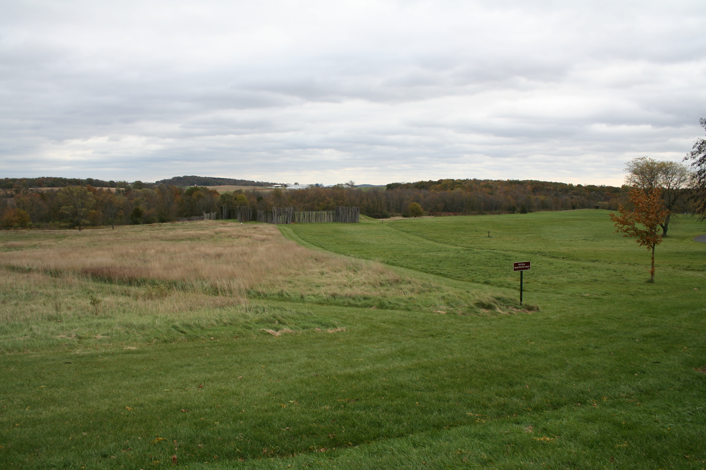

Friends of Aztalan State Park is led by a dedicated volunteer board of directors drawn from the local community — people who share a deep passion for Wisconsin's ancient heritage and its preservation for future generations.
Our Leadership
Our volunteer board guides the strategic direction of the organization, oversees programs and finances, and works hand-in-hand with Wisconsin DNR staff to support Aztalan State Park.
Officer Roles
Our elected officers guide the day-to-day operations of the Friends group, from financial oversight to community engagement and program coordination.
Join Our Team
Aztalan State Park couldn't function without the dedicated volunteers who give their time, skills, and energy to this special place. Whether you're interested in trail maintenance, visitor services, special events, or something else entirely — there's a role for you.
Contact Volunteer Coordinator Kristine Kust to learn about current volunteer opportunities.
